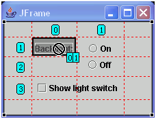
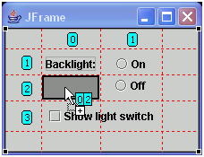
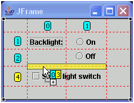
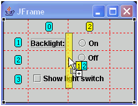
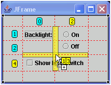

When you build your application visually using GridBagLayout, the
visual grid markers help you to move and drop components in the required position.
To add or move components within GridBagLayout:
- Select the Swing component from the palette that you want to add
to your GridBagLayout, or click and drag the existing component that you want
to move within your GridBagLayout.
- Move your mouse pointer over the position where you want to drop
or move the component:
- If you point to a grid cell that is already occupied by another component,
you cannot move or drop in that position.

- If you point to a grid cell that is empty, the cell turns dark grey
to indicate the valid drop position. The cursor shows the X and Y grid values
for the drop position. The first number is the X value, which represents the
column, and the second number is the Y value, which represents the row.

- If you position your cursor on a grid boundary, a yellow bar indicates
that a new column or row number will be added.
- If any new column or row number is being added by your placement,
the background color yellow shows on the cursor X/Y indicator and on the column
and row labels. Components that are in rows or columns with yellow circles
will be updated to reflect the new grid X/Y values.



- Click or release your mouse to drop the component in the position
that you selected.